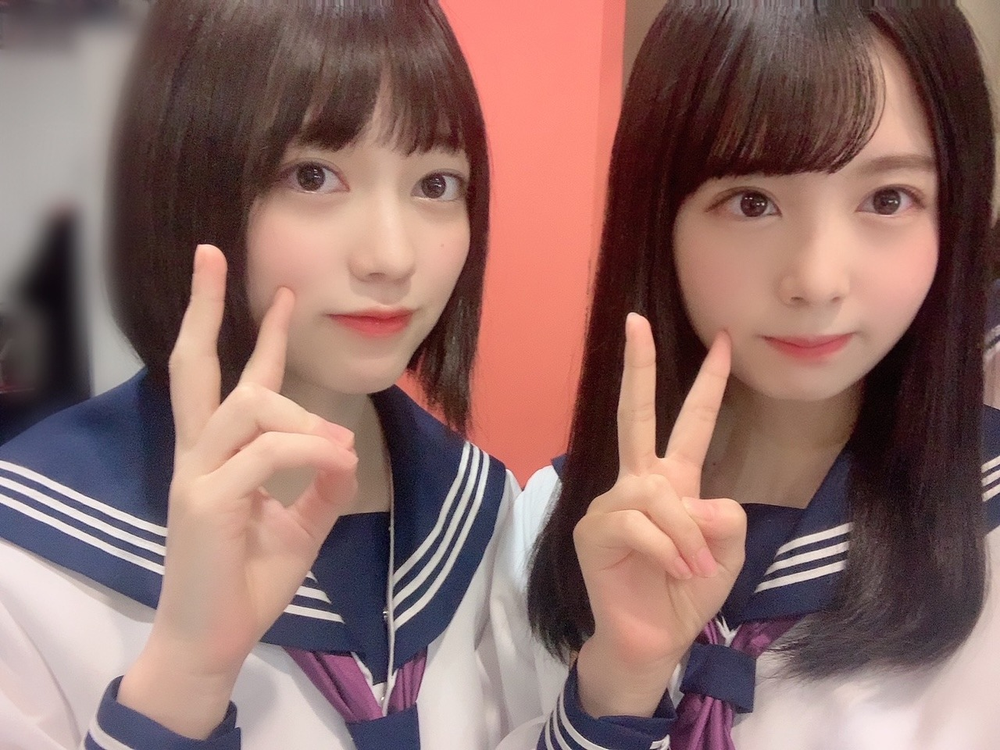

2020/1219Satあったかいお布団が。佐藤璃果
こんにちは~
佐藤璃果です。
巻き巻きしてもらいました！(*¨*)
東京の横断歩道って長いなぁと思い
それってああそうか
交通量が多くて、車線が多いからか！
こんなに身近な所にも
都会要素が沢山含まれてるんだなぁと。
歩くことが多いです、
車道の向こう側に広がる
夕方の都会の景色も好きです。
ジャンプしてピースしたくなるの。
冬です寒いです。
お布団から出れなくなる季節ですか？

ノギザカスキッツオフショットです
照負倶楽部ありがとうございました。
やはり先輩方はお強いですね...
ゆなちゃんもギリギリまで沢山考えて
いて、私はもうキュンキュンでしたよ。
もっと成長していけるように頑張らせて
いただきます！！
❁
○12月21日発売、B.L.T. 2月号さん。
4期生連載企画に登場させていただきます。
セブンネットショッピングさんで注文すると
ポストカードが付くようです！
ぜひチェックをお願いします。
発売されたらまたお話させて下さい。
❁
アンダーライブ
私も沢山盛り上がりたいと思います。
無事に沢山の方が楽しんで、幸せな気持ちや温かい気持ちに溢れて終えられる事を願っています。
先輩方の素敵なところ、沢山見させていただきます！！︎︎☺︎︎︎
❁
テスト期間が終わり、
もうすぐ皆さん冬休みですか？
今年はどんな毎日を
過ごされるのですかね~？

にっこ
笑う写真を撮ろうとするとね
ブレてしまうのが難点なんですよ( ˙º˙ )
~~~質問~~~
○ 来年は璃果ちゃんにとってどんな1年にしていきたい？
普通を大事に、周りを大事に、日々を大事に
成長したいです。
○
すごく直近で、
去年の友達としたクリスマスパーティー。
プレゼント交換とかてすね。懐かしい...
○ 寒くなってきたので鍋を食べる機会もあると思うんですけど、鍋によく入れる具材は何ですか？
○ 璃果ちゃんおすすめのハンドクリームはありますか？？
♡ローラメルシエのハンドクリーム
♡ジルスチュアートのハンドクリーム
○ 璃果ちゃんの好きなお寿司のネタは？
♡いくら、
♡サーモン、
♡光り物、
...
❤︎ 枝豆
○ 始めてみたいことってある？
楽しい運動
~~~~~~~~~~~~~~~~~~~
明日はるなぴです。
私の名前が出てきて嬉しかっだなぁ
~~~~~~~~~~~~~~~~~~
皆さんにとって
素敵な1日になりますように。

本日は櫻坂46の幸阪茉里乃ちゃんの
お誕生日です！！
おめでとうございます(っ ॑꒳ ॑c)
まりのんとご飯に行ったこと、
とても懐かしいです。可愛いのです！
可愛い！坂道研修生ツアーでは名前順で隣で、沢山の思い出を隣で過ごしました！
楽しそうでなによりです。
またご飯に行けたらいいなと思います。
素敵な一年になりますように！
またね。
#48りか

PROFILE
新4期生リレー
202104
| SUN | MON | TUE | WED | THU | FRI | SAT |
|---|---|---|---|---|---|---|
| 1 | 2 | 3 | ||||
| 4 | 5 | 6 | 7 | 8 | 9 | 10 |
| 11 | 12 | 13 | 14 | 15 | 16 | 17 |
| 18 | 19 | 20 | 21 | 22 | 23 | 24 |
| 25 | 26 | 27 | 28 | 29 | 30 | |

コメント(272)
ブログ更新ありがとう！
ノギザカスキッツ見たよー！
みんなすごく可愛かった！
チャイナドレスすごく似合ってたよ！！
次のノギザカスキッツも楽しみ！
ゆっちゃんより。
大学受験終わって、高校生最後のテストも終わってゲームいっぱいしてるけど、｢流石に体動かさないとっ！｣って思い始めた笑
体動かせば、免疫力も付くし、運動不足も改善できる！頑張るぞぃ！
〜質問〜
Q.りかちゃんはダンスのレッスン以外で、自主的にやってる運動ある？？
〜今日の名言〜
自分は自分である。何億の人間がいても自分は自分である。そこに自分の自信があり、誇りがある。
松下幸之助さん
この言葉いいね
努力してきたこと、頑張ってきたことを自分を信じて突き進む！カッコイイ言葉だね
Q.りかちゃんは今まで1番努力してきたこと何？？
冬はカーディガン派？セーター派？
もうすぐでクリスマスだね！
璃果ちゃんはサンタさんまだ来るのかなぁ？
僕は頼めば多分来てくれます笑
最近さらに寒くなってきたね。璃果ちゃんが岩手にいた頃はもっと寒かったと思うけど今年は本当に東京も寒いです。
一昨日におばあちゃんからミカン10キロが届きました！僕は果物大好きなのでとても嬉しかったです。しかし、あまりの量に1人では食べきれないので友達におすそ分けしました笑
最近また感染者数も増えて来てるので璃果ちゃんも気をつけてね！風もひきませんように
最後に質問コーナーお願いします！
Q好きな果物教えてください！
Qアラームは何をかけてますか？
Qクリスマスの予定はできましたか？
Q好きなケーキありますか？
よかったらお答えお願いします！
またコメントするね！またねー
PS.裸足でななよだ(きょうすけ)
あったかいんだから〜
寒くなってきたね！
風邪をひかないように気をつけてね
バースデーライブで参加してみたい曲は？
たしかに東京の横断歩道長いかもしれない笑こっちだと、多くて3車線とかだからそんなに長くないもんね〜
冬休みは特に何もすることなく終わりそうだな〜って感じ笑大学はその分春休みが長いから、行けそうだったら旅行行こうかなって思ってる！
じゃ、またね！
璃果ちゃんブログ更新ありがとう〜！
都会やとやっぱ車道の広さに驚くよね、しかもテレビとかで映るスクランブル交差点の人の量とか凄すぎて驚くんよね笑
でも広い方が安全な感じするんですよね、分かってもらえるかな？？
今年は色々と大変な1年やったから、来年は穏やかに過ごせる1年になるといいよね〜
特にこの1年で「当たり前」とか「普通」って言うものがどれだけ儚くて素晴らしいものかって感じたんよね笑
一日でも早く以前みたいに握手会とかライブができるように祈るばかりやね〜
そういやもうクリスマスもあっという間に近づいてるけど、璃果ちゃんはサンタのコスプレとかトナカイのコスプレとかしたことありますか？？
あるならその時の写真も見てみたいかな〜
次の更新の日はひなくり2020が行われる日やけど、璃果ちゃんも見るんかな？
んじゃ最近ではあちこちで雪も降ったりしてるけど、こっからまた頑張っていこー
オフショットかわいすぎて死にます♡♡♡♡♡♡♡♡♡♡♡♡♡♡♡♡♡♡♡♡♡♡
早くミーグリでもそれを見せてね♡♡♡♡♡♡♡♡♡♡♡♡♡♡♡♡♡♡♡♡♡♡じゃあまたね♡♡♡♡♡♡♡♡♡♡♡♡♡♡
ちゅちゅちゅちゅちゅぅぅぅぅぅうううううう♡♡♡♡♡♡♡♡♡♡♡♡♡♡♡♡♡♡♡♡♡♡
巻き巻き似合ってるよ笑
確かに都会じゃないとあんな広い横断歩道渡ることそうそうないもんね笑
ちゃんと車には気をつけるんだよ。
もう僕は最近ずっと布団から出られませんよ笑
僕の住んでるところでは雪が降ってます。今日も降ってました。先日たまらずにこたつ出しちゃいました笑
ぬくぬくで暖かいです笑
でも動けなくなるから注意です笑
ノギスキ見たよ〜。
照負倶楽部良かったよ！
僕はね、もうずっとキュンキュンしてましたよ笑
藤森さんすげーって思ったわ、よく耐えれるなって笑
今度のミーグリでやってもらお笑
アンダーライブ全日見てますか？
僕は最終日だけ配信で見ようと思います。
楽しみや〜。
もうすぐ冬休みだけど卒業設計進めなきゃだから休めないや笑
ブレてても可愛いよ笑
笑うと一緒にても動いちゃうタイプなんだね笑
璃果ちゃん璃果ちゃん、枝豆はお寿司のネタじゃないよ笑
またブログ更新楽しみにしてます！
(=ﾟωﾟ)ﾉﾎﾅ､ﾏﾀ!!
お布団から出れなくなる季節になってきました
風邪ひかないようにね！！
ノギザカスキッツ凄いかわいかった
あれは照れます。すぐにやけます。笑
BLT予約するね！ポストカード欲しいもん！
-------------------------------------------------
Q 題名にちなんで布団から出れない時どーやって出ますか？
布団から出るのになん分くらいかかるー？笑
Q ミーグリで照負倶楽部開催してくれますか？？
-------------------------------------------------
本当に最近すごい寒くなってきたし風邪ように気をつけてね！
コロナとそろそろインフルにも気をつけて！！
また49回目で会いましょ〜✋
くーやより
ノギスキめっちゃ可愛かった！
【質問】
冬はこたつ派かエアコンの暖房派かどっちですか？
ノギザカスキッツ観たよ〜
りかちゃん良かったよ
B.L.Tも買うね〜！
[質問]
スキーとかスノーボードは好きですか？
おすすめのハンドクリームはありますか？
巻き巻きしてもらったの可愛い、、
横断歩道長いのすごく分かります、、
歩くの疲れますよね、
田舎民辛い、、、
質問です(ᐡ⸝⸝- -⸝⸝ᐡ)
◎ 地域によってお雑煮の具が違いますが璃果ちゃんのおうちのお雑煮はどんな感じですか??
◎ 照負倶楽部ミーグリでお願いしてもいいですか??
◎ 璃果ちゃんが今年やり残したことはありますか??
◎ 触覚ありポニーテールが見たいです(；；)
後ちょっとで今年が終わるけど最後まで頑張ろ~！！
まなより
〜質問〜
・呪術廻戦みてますか？
・寒いのは得意？（岩手出身だから得意そう！）
りっちゃん！
やっほー！
ひろき(Yandji)です☺️
ブログ更新ありがとー！！！
質問タイムー！！！
オススメの映画とかある？
また、コメントするね！
では、またねー！
ひろき(Yandji)より
髪の毛の感じで雰囲気変わりますね！
ノギスキみました！
チャイナ服めちゃくちゃ似合ってました！
髪型も中華っぽくてかわいかったです！
おしかったですよ笑
アンダーライブ楽しみですね！
笑顔の時ほんとうに笑うようにしてますか？
笑
枝豆好きなんですね。
運動なんですかね、
バドミントンとかやりやすそうかなぁ。
僕も最近冷やし焼き芋食べました！
紅はるかっていう種類だったんですけど
冷たい方が美味しんじゃないかって思いました。甘かったです！
まりのちゃんおめでとう！
またね。
うわーー、可愛い巻き巻きりか(*´ω｀*)♡
ジャンプピーズの姿を見た～い＼(^o^)／
ノギザカスキッツお疲れさまでした
勝てなくて残念だったが、頑張ってたよね
今後は先輩たちにアドバイスを聞いてね（笑）
BLT楽しみ＼(^o^)／
アンダラ初日楽しかったなあ
残り公演も楽しもうよ＼(^o^)／
うわーー、黒ニットウインクりかちゃん可愛い(｡>﹏<｡)♡♡♡
ずるっ(｡>﹏<｡)♡♡♡
ぶれぶれ写真（笑）いい笑顔だな(*´ω｀*)
・好きな寿司ネタは「光り物」って（笑）
これからも頑張って(/･ω･)/
コメント、失礼します！
ブログ更新、ありがとう！
確かに東京の横断歩道は地元のより長いわ。
あんま意識してなかった。
都会の景色もそれはそれで良いよね。
ジャンプしてピースしてるりかちゃんを写真で納めたいものです笑笑
ノギスキ、お疲れ様でしたー。
確かに先輩方は強かったけど、りかちゃんもめちゃくちゃ可愛かったよ。
自分は秒で負けました笑笑
でもりかちゃんたちの下で一生働けるのは幸せかもなーとも思いました笑笑
アンダーライブ、自分は明日、配信で観させていただく予定です。
久し振りの熱いアンダーライブ、楽しみだなー。
いつもながら自撮りも可愛い。
ブレてるりかちゃんも可愛いです笑笑
質問もありがとう！
好きなお寿司のネタ、どれも共感できますねー。
自分はあと穴子やホタテが好きだなー。
枝豆食べたくなるのも分かるよ笑笑
今日は茉里乃ちゃんの誕生日だね。
ミーグリで話した時も変わらず可愛かったし、元気そうだったな。
素敵な一年にして欲しいよね。
それでは、この辺で。
おやすりかちゃんー
今日も可愛い写真ありがとう〜！見るだけでだいぶ癒されます…。(笑)
ミーグリが開催されることになって、やっとこさりかちゃんとのコミュニケーション取れる場が出来たことで、色んなことのモチベーションが上がってきてるから、幸せだなって感じることが多いです！(笑)
バイトとか勉強とか色々頑張っていくね！
スキッツ見ました〜！チャイナ服りかちゃんとても可愛かったです(*´﹃｀*)
照れさせる事は出来んかったけど、あぁいう企画じゃなかったら多分世界中の人みんなデレデレになるくらい最高でしたよ…！あんまし嬉しくないかもだけど(笑)
これからもスキッツでの活躍期待してるね！！
質問
・りかちゃんが今アイドルなんだなぁって感じた瞬間はありますか？
・4期生ライブ、1番踊ってみて難しい〜！ってなった曲はありますか？
・白のニットワンピース、ヒキの絵で見てみたいです〜！
・今後のライブでユニット組んでみたいメンバーはいますか？
・りかちゃんはアニメとか映画とか何か好きなキャラクターはいますか？
5日後をまた楽しみに待ってるね！
メリアより。
ブログ更新ありがとうございます
俺もあったかい布団が欲しいです (^.^)
毛布入れて3枚被っています
かなり重たくてね
巻き巻き璃果ちゃん かわゆいです
ノギスキの照負倶楽部良かったよ
ミーグリでお願いしやす
21日のBLT
セブンネットで予約済みです
璃果ちゃんのポストカードが欲しいからね
アンダーライブは地元名古屋で
観たことがあります
らりんの卒コンでしたが！
また おやすみラブコメするけん
待っとてちょ〜よ
ノギザカスキッツ可愛かったよ〜！キュンキュンしました(;_;)チャイナ服もとっても似合ってて可愛すぎた(;_;)
璃果ちゃんとハンドクリームお揃いするね\♡/
1/31のミーグリ取りました！璃果ちゃんと初めてお話できるの楽しみにしてます♡まだ1ヶ月以上先だけど、今からわくわくしてます笑
質問というかリクエストです。
璃果ちゃんの私服紹介をして欲しいです〜！全身写真とかもあったらブログに載せて欲しいです(><)
今日も大好きです¨̮♡
照負倶楽部とても可愛くて自分はずっと照れてしまったよ笑
ほんとチャイナ服の璃果ちゃんは可愛すぎだね
そしてミーグリ二日間取れたよーー今からなに話そうか考えててとっても楽しみだよー
璃果ちゃんに質問です
○最近ずっと寒いですが、何か寒さ対策をしてますか？
○クリスマスプレゼントに欲しいものはなんですか？
○ミーグリ何かして欲しいことはある？
以上です。
今日もありがとう璃果ちゃんのあげる写真はどれも可愛くてカメラロールが璃果ちゃんでいっぱいになっちゃいました。
また5日後が楽しみです
私の地域では雪が積もりました~！
璃果ちゃんのとこも積もったかな??
すごく寒くて風邪ひきそうです(--;)
◎ 瑠璃の2人の歌詞動画を作りました~！！！曲は=LOVEさんの流星群という曲です！！ すごくいい曲なので聞いてみてください(ᐡ⸝⸝- -⸝⸝ᐡ)
◎ 璃果ちゃんがよく買うお洋服のブランドはどこですか??
◎ Ank Rougeさんのお洋服がすごく可愛くて璃果ちゃんに絶対似合うので着てほしいな(⸝⸝o̴̶̷᷄ ·̭ o̴̶̷̥᷅⸝⸝)
明日生写真が届くみたいだから璃果ちゃん自引きできるように頑張るね☺︎
まなより
本格的に寒いですねぇ、毎朝布団からすぐに出られなくて非常に困っています。
布団はなんにも悪くないのにね、寒すぎるのがいけないんだな(？)
とは言うけど、東京より地元の方が断然寒そうだけどどうなんだろ？
東京に比べて明らか気温は低いから、冬はそもそも生活してくのが大変そうなイメージです。
ーーーーーーーーーー
照負倶楽部、僕は全員照れちゃったんだけどね(チョロすぎ(笑))
藤森さんが意外にも耐性があったのがな〜
でも山下プロには一瞬でやられてたけど笑、あれはさすがの山下プロだったね(笑)
次また同じようなシーンがあったときは、照れさせてやりましょう！！
ーーーーーーーーーー
お寿司のネタで枝豆ってどういうこと？笑
枝豆の軍艦とかではなくて、単純にお皿に盛られた枝豆ってことなのかな？(それとも本当に枝豆がのった寿司ネタ…？)
そういえばりかちゃん豆好きだったな〜ってふと思い出したよ(笑)
次回のブログも楽しみにしてるね！((o(*^^*)o))
またね〜！(＊･ω･)ﾉ
東京の交差点って本当にながいよねー。
特にスクランブル交差点とかー！
ノギザカスキッツ放送されてない県だから、
大分遅れてCS放送でみるねー！笑笑
じゃあ、また、ブログ更新まで、
待ってるね！
じゃあ、アンチャン！
ちらっと画像で見たけどこの前のノギザカスキッツのりかちゃんめっちゃ可愛かった！！愛知は放送遅いからもうしばらく楽しみ待ってるよ、、、
久々に研修生時代の写真見た気がするけどやっぱマネキンの制服似合うなあ( ¨̮ )︎❤︎ 若干幼い感じもすき、、、、めちゃ可愛い、、、
もうブログ年内残り2回かな？？次の更新イブだね楽しみにしてる！！！！
BLTセブンネットで予約始まってるの見て、璃果ちゃんポストカードが付いてるじゃん！って思ってすぐ予約した！今から楽しみ〜
最近急に寒くなったよね笑 全然布団から出られないよ〜
ノギザカスキッツの璃果ちゃん見たよ！30秒間ずっとキュンキュンしてた
★★★質問★★★
○もうすぐ年末だけど、年末の思い出とか今年だと何か予定ってある？？
○さぁちゃんは結構ゲームやってるけど、璃果ちゃんって何かゲームとかやってる？
では、また5日後！楽しみに待ってまーす
れん
いつもお写真がどれも
可愛くて幸せな気持ち
になります。
巻き髪が好きだ。
女性のマフラー巻いて巻き髪
がファサってなっているのが
好きなんですよね。
ノギザカスキッツ楽しかった
です。
我慢しなければ男はみんな
照れますよ。
その瞳に見つめられた
だけで。
私の事愛してる？
と、次回チャンスがありましたら
言ってみましょう:)
照れながら
愛してるよ
って、必ず言い返すでしょう。
璃果さんの勝ち。
冬は澄んだ空気で夜空が
綺麗ですね。
そこで。
星空が綺麗に見える場所を
璃果さんと散歩をします。
パンプキンポンプキン
以下PP
PP「星が綺麗だね」
璃果「うん。綺麗だね」
PP「あのさ」
璃果「なーに？」
PP「今から土星の輪っかとってあげる」
璃果「え？何言ってるの？とれる訳ないじゃない」
PP「絶対とってやる」
璃果「…」
ジャンプを何度も何度もするPP
PP「ん〜、えい、えい、絶対とってやる」
璃果「ねぇ、ちょっと、とれないって、もうやめなよ」
PP「やっぱり土星の輪っかはとれなかったよ」
璃果「当たり前じゃない」→呆れ気味
PP「その変わり。これ」
サッと指輪を渡す(土星の輪っかと指輪の輪っかをかけている)
え〜。
現場からは以上です。
最近寒すぎん？
朝はエアコンをつけてあったまるまで、布団から出れません笑
いつもより早めに目覚ましセットしよっと。
りかちゃんは寒さには強そう。
岩手って結構寒いイメージある。
まぁ慣れてたとしても寒いのは寒いよね。
あったかくして風邪ひかんようにね！
ノギスキ見ましたー！
あんなお店あるなら行きたいです。
藤森さんは頑張って耐えてたけど、俺はテレビの前ですぐにニヤけてしまいました。
一生そこで働くのでぜひ雇ってほしい笑
終始、藤森さんに嫉妬してた。
握手会とかでやってくれたりします？笑
楽しい回やった！！ありがとう！
クリスマスまで1週間切ったね。
今年はいつもと違って遊びに行かれへんけど、お家でゆっくりするのも一つの楽しみ方かな。
りかちゃんはどんなクリスマスの予定？
また聞かせてね。
アンダラ楽しすぎ！！
りかちゃんの感想も聞かせて！
ではでは体調には気をつけて。
次のブログも待ってます。
いつもありがとう。
今回の写真も可愛いね〜〜☺︎
あ！そうそう！
今やってる乃木フェスのイベント、璃果ちゃんレーンで頑張ってるんだ〜〜！
テスト終わって休みに入るから時間いっぱい使えるの〜〜
いつも休みになったら何かに挑戦したいなーって思うんだけど、何しようって考えてるうちに休み終わりがちなのが悩み、、
璃果ちゃんはこの年末年始にやりたいことってあるー？
もしあれば参考にしたいな！
最近また急に寒くなったから風邪ひかないように暖かくして過ごしてね！
じゃあばいばい！ みみみ٭❀*
最近本当に寒いね…((´д｀)) ﾌﾞﾙﾌﾞﾙ
お布団が恋しい(´▽`)ﾎｯ
でも璃果ちゃんの実家の岩手の方が
絶対寒い気がする、、！！！
だから東京の寒さなんてへっちゃら
なんじゃない？？？笑
┈┈┈┈┈┈┈ ❁ ❁ ❁ ┈┈┈┈┈┈┈┈
アンダーライブやってるね~！
先輩たちのライブって見応えあるし
見習うところ多いよねきっと…φ(．．)ﾒﾓﾒﾓ
璃果ちゃんは先輩たちのライブを観るときに
どんなところに注目して観てるのかな？？
アンダーライブは有観客だよね！
4期生ライブもお客さん入れたかったね…
私も璃果ちゃんに会いたかったよ~( •̥ ˍ •̥ )
次ライブするときはお客さん入れて
璃果ちゃんに会えるといいな(*´`)♡
┈┈┈┈┈┈┈ ❁ ❁ ❁ ┈┈┈┈┈┈┈┈
【質問】
・今年を漢字1字で表すとなに~？？
・枝豆のどんなところが好きなの？！♡
・私も璃果ちゃんとクリスマスパーティーしたい~！参加してもいい？？
璃果ちゃんがどんなハンドクリームが
おすすめなのか知りたかったから
知れて嬉しい！！！♡
さっそく使ってみるね☺︎
最近寒いけど体調には気をつけてね(*ˊˋ*)
またブログ更新待ってるね~⸜❤︎⸝
*⑅୨୧まなみん୨୧⑅*
白菜､きのこ類､豚バラ､鶏団子…
もつ鍋だね？？
(゜o゜)
それとノギザカスキッツもめっちゃ最高でした！めちゃめちゃかわいかったです☺︎
巻き巻き璃果ちゃんも笑った璃果ちゃんもちょっとブレちゃってる璃果ちゃんも最高です！また5日間待ってます！
茉里乃ちゃんお誕生日おめでとう！
冬本番で布団から出れん寒い季節になっちゃってもう寒いねぇ璃果ちゃんも体調に気をつけてください！
質問というか良かったら12月22日誕生日で20歳になるんで良かったら祝ってください笑
また5日間待ってます！
乃木坂の推しです！！
頑張れ
研究生同士で仲良いの微笑ましい ❤️
幸阪茉里乃ちゃんお誕生日おめでとうー！(ここで言うな)
りかまりの(長い)と言えば、坂道研修生ツアー(東京公演)の水分補給タイムで璃果ちゃんが幸阪ちゃんに手を伸ばして起こしてあげていたのがすごく印象的で、2日あった水分補給タイムの中でそこだけ鮮明に覚えています笑
あと幸阪ちゃんの「しー」っていうポーズも可愛かったですね(ここで言うな)
もちろん璃果ちゃんが1番可愛かったですけど、、。
めでたい日ですね！元坂道研修生の子達の誕生日は、こっちまで嬉しくなるのでいいですね
いつか、りかまりののご飯行った報告が来るのを楽しみにしてます(待つな)
P.S.毎朝寒すぎて布団から出られません、お腹と背中にカイロを貼ってても死にそうです
死因が「寒さに耐えられなかった(凍死)」にならないようにとび跳ねながら生活してます。雪国育ちの璃果ちゃんはどうやって冬の寒さに耐えてましたか？
それではではで、
明日が璃果ちゃんにとって素敵な日になりますよう
またね
コメントする